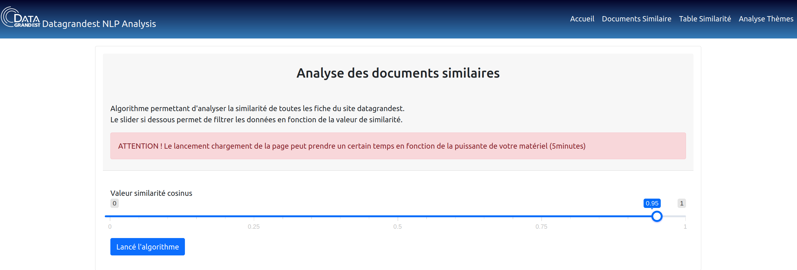

Documentation
Présentation du projet : Analyse des fiches de données Datagrandest
Ce projet s'inscrit dans une analyse exploratoire des jeux de données disponible sur le site Datagrandest.
Objectifs de l'analyse : - Créer un algorithme capable de vérifier si il existe des doublons dans les jeux de données présent sur le site datagrandest . - Créer un algorithme capable de classer les jeux de données par thèmes.
Ce projet réunie ces algorithme dans une application web flask.
Installation
- Récupérer le projet sur Github.
- Créer un environnement virtuel python via conda ou venv.
- Installer les packages nécessaires au projet via le
requirements.txtavec la commande :
Lancement de l'application Web
A la racine du projet exécuté les commandes suivantes dans le terminal :
Schéma de l'application Web
flowchart TD
home[Homepage]-->similarity[Document Similarity]-->
url[Enter URL CKAN for analyse similarity of document]-->|Function most_similar_url|cosine{{Cosine_analyser}} --> render([Render similarity document compare to other])
SQL[(SQL Database)] -->|Count number of documents|home
home[Homepage]-->topic[Topics Modelling visualizer] --> rangeslicertopics[Range slicer choose number of topics]-->|Function load_lda_model|lda{{LDA Topics model}} --> render_topics([Render visualisation Topics])
api[(Call Api Datagrandest)]-->|Function Load dataset_similarity|rangeslicertopics
home[Homepage]-->table[Table similarity]--> loadtable[/load table which compare similarity for all documents/] --> returntable([Render Table similarity])
table --> buttontable[Click Button on page for access algothrim parameter page]--> algosimilar[/Algorithm for get all cosine similar for each document/] --> slicesimilarity[Range slicer : Choose the value of cosine similarity] -->|Function most_similar_all|render_similarity([return CSV])
CSVselect[(CSV fiche_select.csv)] --> loadtable
CSVsimilar[(CSV fiche_similar.csv)] --> loadtable
render_similarity --> CSVselect
render_similarity --> CSVsimilar
style home fill:#3498db
style table fill:#3498db
style similarity fill:#3498db
style topic fill:#3498db
style SQL fill: #FF5733
style api fill: #FF5733
style CSVselect fill: #6D8B74
style CSVsimilar fill: #6D8B74
style url fill: #839AA8
style rangeslicertopics fill: #839AA8
style buttontable fill: #839AA8
style slicesimilarity fill: #839AA8 Analyse des Documents similaires
Documents Similaires
Permet de tester la similarités d'une fiche de données par rappport aux autres en utilisant l'url d'une fiche datagrandest.
Choix d'un URL sur CKAN
Pour choisir une fiche et récuperer son URL correspondant, selectionner une fiche sur CKAN exemple URL de fiche de donnée : https://grandestprod-backoffice.data4citizen.com/dataset/donnee-grand-est-terre-de-jeux-2024
Table Similarités
Tableau permettant de comparer la similarité de toutes les fiches du site datagrandest. Le tableau regroupe pour chaques fiches :
- L'url de la fiche dont la similarité est testée
- L'url de la fiche similaire
- La similarité cosinus entre les deux fiches
Mettre à jour les données du tableau et choix de la similarité cosinus
Les données du tableau peuvent être mis à jour en cliquant sur le button Chargement de l'algorithme de similarité sur la page contenant la table de similarité.
Vous accéderez a une interface vous permettant de choisir la similarité cosinus (valeur entre 0 et 1).
Une fois chargement de l'algorithme terminé,les données sont stockés dans deux fichiers CSV fiche select.csv et fiche similar.csv,les données du tableau seront automatiquement mis à jour.

Analyse des thèmes
Pour visualiser à quel thèmes correspond chaque fiche de données sur le site datagrandest nous avons utilisé l'algorithme LDA (Voir documentation) qui permet d'attribuer des sujets à chacun des documents :
- Via l'interface vous pouvez sélectionner le nombre de sujets à attribuer (par défaut 9)
- Une visualisation sous forme de graphique permettant de déterminer les termes récurrent de chaque fiche

Choix du nombre de thèmes (optimisation des hyperparamètres)
Pour savoir quel nombre de thèmes correspond le mieux a nos données il faut tester notre algorithme avec différents hyperparamètres est déterminer le nombre de thèmes le plus efficient.
Dans le fichier topic_modelling.ipynb vous pouvez tester les hyperparamètres de l'algorithme (résultat obtenu dans le fichier lda_tuning_results_new.csv), puis visualiser le nombre de thème opimal pour vos données.